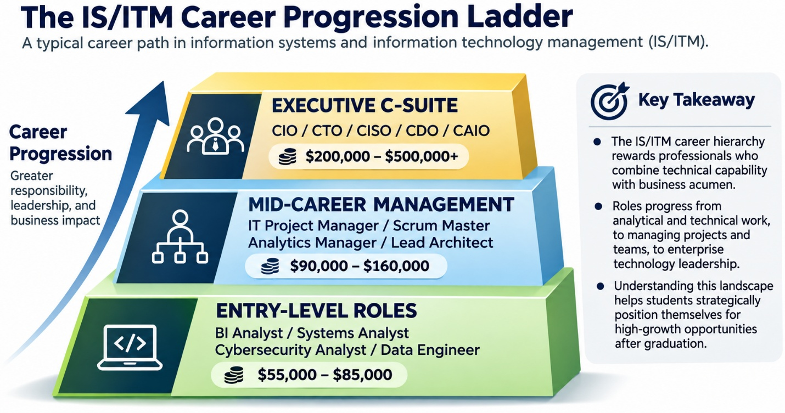
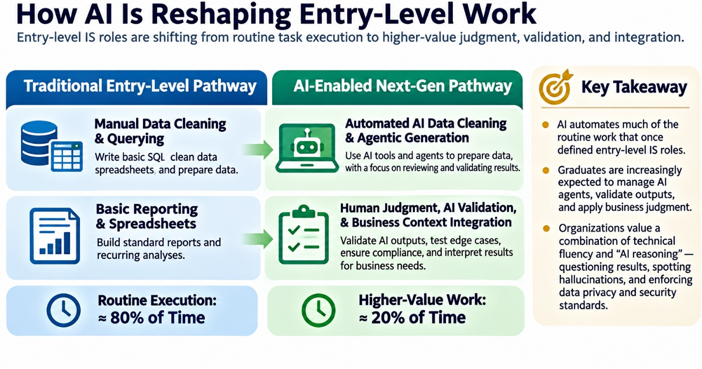

7.1 The Information Technology Management and Information Systems Profession: Strategic Leadership, Career Pathways, and Digital Transformation
Note: this chapter will not be tested.
While many ITM students aim to become data scientists / data analysts / AI scientists, this chapter focuses more on the traditional ITM profession. This chapter is optional (as some Scheller students are not interested in the ITM profession) and will not be directly examined.
The Strategic Imperative: Why Information Systems is the Ultimate Business Career Engine
In late December 2022, a severe winter storm rolled across North America, disrupting travel across every major commercial airline1. While competing carriers like United, Delta, and American stabilized their flight schedules within forty-eight hours, Southwest Airlines entered a full-blown operational breakdown1. Over ten days, Southwest canceled more than 16,900 flights, stranded over two million travelers in airport terminals, lost an estimated $825 million to $1.1 billion in revenue, and faced a historic $140 million civil penalty from the U.S. Department of Transportation1.
The catastrophic meltdown was not caused by extreme weather alone; it was triggered by a systemic failure of information technology management1. At the center of the collapse was SkySolver, a crew-scheduling system originally deployed in the late 1990s3. While SkySolver performed adequately under ordinary conditions, its underlying architecture could not process the high volume of cancellations caused by the storm2. When weather disruptions forced thousands of pilots and flight attendants out of position, SkySolver lost track of crew locations, legal rest hours, and flight assignments2. Frontline employees tried to manually reconcile crew schedules via telephone, but call queues surged past thousands of hours4. Available aircraft sat idle on airport tarmac while flight crews waited in terminal lounges, simply because the scheduling software could not match the two2. Southwest pilots and union representatives had warned management for years that the scheduling platform was fragile, but executive leadership consistently prioritized short-term financial returns and visible customer-facing features over backend infrastructural upgrades1. Southwest paid for that deferred maintenance in a single operational disaster1.
Nineteen months later, a different crisis illustrated how third-party supply chains and weak software governance can paralyze global commerce5. On July 19, 2024, cybersecurity vendor CrowdStrike deployed a routine update to its Falcon sensor software5. The software operated with privileged, kernel-level access inside the Microsoft Windows operating system—the deepest, most powerful layer of operating system memory7. A logic error inside the update file caused 8.5 million Windows servers and computers worldwide to crash instantly, displaying the "Blue Screen of Death"5.
The resulting outage crippled emergency 911 dispatch centers, suspended elective hospital surgeries, froze international shipping terminals, and disrupted point-of-sale systems across major retail chains5. Total direct losses for Fortune 500 companies exceeded $5.4 billion6. Delta Air Lines was hit particularly hard, canceling over 5,000 flights over five days, suffering $500 million in direct financial losses, and launching high-profile litigation against CrowdStrike to recover damages6.
| Disruption Metric | Southwest Airlines Operational Collapse (2022) | CrowdStrike / Delta Global Outage (2024) |
|---|---|---|
| Root Cause | Internal technical debt and legacy software architecture (SkySolver)3 | External supply-chain update flaw with kernel-level operating system access6 |
| Direct Financial Impact | $825M–$1.1B lost revenue + $140M federal civil penalty1 | $5.4B across Fortune 500 ($500M+ direct loss for Delta Air Lines)6 |
| Operational Scale | 16,900 flights canceled; 2M+ passengers stranded1 | 8.5M servers crashed globally; tens of thousands of flights grounded5 |
| Governance Failure | Leadership deferred modernization of critical operational software for years1 | Inadequate staged rollout and automated testing of privileged vendor updates6 |
These high-stakes disruptions reveal a fundamental lesson for business students: technology is no longer an administrative support function managed in the corporate basement3. Information systems form the nervous system, core operating model, and primary value engine of modern enterprise3.
For business graduates, this reality translates into an unparalleled career opportunity. The U.S. Bureau of Labor Statistics (BLS) projects employment in data analytics, information systems management, cybersecurity, and cloud architecture to grow between 15% and 31% over the coming decade—substantially faster than the average growth rate for all occupations9. Because organizations across every sector—finance, healthcare, logistics, retail, entertainment, and consulting—are restructuring around digital platforms, graduates who understand both business strategy and technology architecture command superior starting salaries, rapid promotion trajectories, and direct access to C-suite leadership9.
Core Concepts: Unpacking the IS/IT Blueprint and Technical Debt
To build a high-impact career in digital business, professionals must master core concepts built from first principles. Non-technical business leaders often confuse "technology" with "information systems," but distinguishing between the two is essential for driving strategic value.
An Information System (IS) is an integrated, organized combination of people, hardware, software, communications networks, data resources, and business policies that collects, transforms, and disseminates information within an organization to support decision-making, operational coordination, control, analysis, and visualization13. An information system is not merely software you buy off the shelf; it is a complex socio-technical system13. It integrates human workflows, corporate incentives, organizational culture, and business processes alongside physical technology assets13.
Information Technology (IT), by contrast, refers specifically to the hardware, software applications, networking infrastructure, databases, and telecommunications assets that serve as the physical and logical building blocks of an information system13. While IT represents the technological engine, an IS encompasses the entire operational system—including human decisions, management rules, and workflows—that extracts business value from that engine13.
When organizations neglect the long-term health of their technical infrastructure, they accumulate Technical Debt1. Technical debt is the implied future cost of additional rework, maintenance, and operational instability created by choosing an expedient, short-term technology workaround over a well-architected, scalable long-term solution1.
Just as financial debt incurs monetary interest payments, technical debt incurs technical interest in the form of reduced software developer velocity, system fragility, security vulnerabilities, and elevated failure rates during peak customer demand1. Every time leadership cuts an IT maintenance budget or delays a database migration to hit short-term quarterly earnings targets, the firm borrows against its digital balance sheet3. As Southwest Airlines learned, technical debt eventually comes due, and the principal and interest must be paid back—often during an operational blackout1.
| Management Dimension | Financial Debt | Technical Debt |
|---|---|---|
| Initial Capital Borrowed | Immediate cash infusion for corporate expenditures | Fast software release or short-term IT budget reduction |
| Ongoing Interest Payments | Scheduled monetary interest expenses paid to lenders | System bugs, reduced developer velocity, constant emergency patches |
| Default Consequence | Insolvency, credit downgrade, or bankruptcy | Catastrophic system crash, security breach, or operational blackout |
| Oversight Mechanism | Chief Financial Officer (CFO) and Board Audit Committee | Chief Information Officer (CIO) and Enterprise Steering Committees |
To prevent technical debt from eroding enterprise value, business leaders rely on IS graduates to establish Business-IT Alignment6. This is the continuous organizational process by which a firm's technology strategy, infrastructure, and resource allocations are directly linked to its strategic business goals, operating models, and market positioning6. Business-IT alignment ensures that technology investments are not pursued as isolated engineering projects, but as targeted initiatives that lower operating costs, accelerate time-to-market, improve customer retention, or create durable competitive advantages6.
Achieving alignment requires a structural framework known as Enterprise Architecture (EA)17. Enterprise architecture is the conceptual blueprint that maps an organization's business vision directly to its operational workflows, data assets, application portfolio, and physical technical infrastructure18. EA allows executives to analyze how a shift in corporate strategy—such as acquiring a competitor or launching a direct-to-consumer app—impacts underlying databases and software platforms, preventing fragmented technology silos that generate technical debt18.
The most valuable professional in modern enterprise is the "bilingual" manager—a graduate fluent in both the language of business strategy (ROI, gross margin, customer acquisition cost, market share) and the language of system design (APIs, cloud architecture, relational databases, pipeline latency)8. IS and ITM graduates serve as this critical bridge8.
Why Managers and Graduates Should Care: The IS/ITM Career Engine
For decades, traditional management treated the IT department as a back-office cost center—an administrative utility responsible for maintaining server racks, running email services, and troubleshooting office hardware3. In a digital economy, that perspective is obsolete3. Technology leadership has shifted from administrative support to the primary engine of top-line revenue growth and market valuation8.
| Management Dimension | Legacy IT Perspective | Modern Strategic IS Perspective |
|---|---|---|
| Primary Mandate | Minimize operational expenses; maintain server uptime | Drive top-line revenue growth; enable business model agility |
| Leadership Hierarchy | Technical Manager reporting to CFO or Controller (L3) | Strategic C-suite peer (CIO/CAIO) reporting to CEO (L2) |
| Core Metric of Success | On-time, on-budget project delivery; ticket resolution speed | Customer lifetime value, time-to-market, digital revenue share |
| View of Technology | Necessary operating overhead; administrative utility | Core competitive asset; strategic differentiator |
| Graduate Career Value | Tactical technical support; limited exposure to strategy | Accelerated career ladder; direct trajectory to executive leadership |
When executive leadership views technology exclusively through a cost-reduction lens, they fall into the "cost-center trap"3. Managers cut backend maintenance budgets, defer software upgrades, and outsource core engineering capabilities to low-cost third parties3. In the short term, corporate financial statements reflect lower operating expenses3. Over time, however, the organization's software platforms become brittle, insecure, and incapable of adapting to market shifts1.
Conversely, market leaders integrate information systems directly into corporate strategy to unlock three primary growth levers:
Operational Scale and Agility
Modern cloud-native platforms allow companies to scale digital operations to millions of global users instantly without buying physical hardware20. Software updates that previously took months to deploy can be released into production multiple times a day, allowing firms to experiment, learn, and adapt faster than traditional competitors22.
Data Monetization and Machine Learning
Advanced information systems convert routine operational transactions into structured data assets21. These assets feed machine learning algorithms that optimize real-time dynamic pricing, automate supply chain routing, detect credit card fraud instantly, and personalize customer recommendations at global scale21.
Platform Network Effects and High Switching Costs
By building digital ordering channels, open application programming interfaces (APIs), and personalized loyalty programs, companies establish direct digital relationships with customers22. These touchpoints create high switching costs and self-reinforcing network effects that insulate the firm from traditional industry rivals25.
How It Works in Practice: The IS/ITM Career Progression Ladder
Understanding the career landscape allows IS and ITM students to strategically position themselves for high-growth roles upon graduation9. The IS career hierarchy is uniquely structured to reward professionals who combine technical capability with business acumen8.

Show long description
The figure is titled “The IS/ITM Career Progression Ladder.” A three-tier pyramid rises from entry-level roles at the bottom, through mid-career management, to executive C-suite positions at the top. An arrow at the left indicates increasing responsibility, leadership, and business impact.
The entry-level tier lists BI analyst, systems analyst, cybersecurity analyst, and data engineer roles, with salaries of about $55,000–$85,000. The mid-career tier lists IT project manager or Scrum Master, analytics manager, and lead architect roles, with salaries of about $90,000–$160,000. The executive tier lists CIO, CTO, CISO, CDO, and CAIO positions, with salaries of about $200,000–$500,000 or more.
A key takeaway panel says the career path rewards people who combine technical capability with business knowledge. It shows progression from analytical and technical work to managing projects and teams and then leading enterprise technology.
Figure 7.1 IS/ITM Career Progression Ladder
1. Entry-Level Springboard Roles (0–3 Years Post-Graduation)
Entry-level IS positions differ sharply from general management or traditional software engineering roles. They place graduates at the intersection of operational workflows, data pipelines, and business strategy9.
- Business Intelligence (BI) Analyst: BI analysts translate raw database queries into visual executive dashboards, key performance indicator (KPI) trackers, and diagnostic trend analyses9. Utilizing SQL, Tableau, Power BI, and Python, BI analysts help business units understand revenue trends, customer churn, and supply chain bottlenecks9. Starting salaries typically range from $60,000 to $75,00010.
- Systems Analyst / IT Business Analyst: Systems analysts evaluate an organization's existing software systems and operational processes, gather requirements from non-technical stakeholders, and write precise technical specifications for engineering teams11. They ensure that software applications are built to solve real business problems11. Starting salaries typically fall between $55,000 and $72,00011.
- Cybersecurity Analyst: Entry-level security analysts monitor network traffic, conduct vulnerability assessments, evaluate third-party vendor risks, and enforce access control policies across enterprise systems11. Starting salaries range from $58,000 to $73,00011.
- Junior Data Engineer / Cloud Analyst: Data engineers construct and maintain the automated pipelines (ETL: Extract, Transform, Load) that clean and move massive corporate datasets into centralized cloud data warehouses11. Starting salaries typically range from $70,000 to $85,00011.
2. Mid-Career Leadership Tier (4–8 Years Post-Graduation)
As IS professionals gain domain experience, they transition from individual technical contributors to cross-functional leaders managing complex digital initiatives, budgets, and teams11.
- IT Project Manager / Agile Scrum Master: IT project managers oversee high-stakes software rollouts, cloud migrations, and system integrations11. Armed with certifications like PMP (Project Management Professional) or CSM (Certified ScrumMaster), they manage project budgets, resolve team dependencies, and ensure on-time delivery11. Compensation ranges from $90,000 to $115,000, reaching $130,000–$160,000 for senior managers11.
- Analytics / Business Intelligence Manager: Analytics managers lead teams of data analysts and BI developers, shaping data strategy for major departments or executive committees11. Mid-career compensation averages $105,000 to $135,00011.
- Enterprise / Solutions Architect: Solutions architects design complex software and infrastructure blueprints that support multi-million-dollar enterprise systems12. Mid-career salaries range from $110,000 to $150,000+11.
3. Executive C-Suite Tier (9+ Years Experience)
At the senior executive level, IS leaders sit beside the CEO, CFO, and COO to direct enterprise business strategy, capital allocation, and digital transformation8.
- Chief Information Officer (CIO): The CIO leads overall technology strategy, business-IT alignment, enterprise architecture, and IT operations8. The CIO ensures technology investments drive business growth while minimizing operational risk8. Executive compensation routinely ranges from $200,000 to $500,000+ plus executive equity8.
- Chief Technology Officer (CTO): While the CIO focuses on internal enterprise technology and systems, the CTO focuses on customer-facing technology products, software engineering platforms, and external technical innovation12.
- Chief Information Security Officer (CISO): The CISO leads enterprise cybersecurity, regulatory compliance, data protection, and disaster recovery infrastructure11.
- Chief Data Officer (CDO): The CDO governs enterprise data assets, data quality, privacy compliance, and data monetization strategies26.
| Career Ladder Rung | Typical Job Titles | Average Salary Range | Primary Skillset Focus | Primary Career Growth Trigger |
|---|---|---|---|---|
| Entry Level (0–3 Yrs) | BI Analyst, Systems Analyst, Cybersecurity Analyst, Data Engineer11 | $55,000 – $85,00010 | SQL, Python, Tableau, requirements gathering, system testing9 | Demonstrating business impact; translating raw data into clear executive insights9 |
| Mid-Career (4–8 Yrs) | IT Project Manager, Scrum Master, Analytics Manager, Solutions Architect11 | $90,000 – $150,00011 | Agile methodologies, project budgeting, cross-functional team leadership11 | Successfully managing multi-million-dollar software rollouts on time and budget11 |
| Executive Level (9+ Yrs) | CIO, CTO, CISO, CDO, CAIO8 | $200,000 – $500,000+ (plus equity)8 | Corporate strategy, C-suite communication, capital allocation, governance8 | Transforming core business models and driving top-line enterprise growth8 |
The Governance Engine: Frameworks, Decision Rights, and Steering Committees
Without formal oversight, enterprise technology rapidly fragments18. Individual business units buy disparate cloud software, duplicate corporate expenditures, store customer data in isolated silos, and create severe cybersecurity vulnerabilities18.
The management mechanism that prevents operational chaos is IT Governance14. IT governance is the framework of decision rights, organizational structures, accountability systems, and oversight policies that ensures enterprise technology investments effectively support business strategy while managing operational, financial, and compliance risks14.
At the top of enterprise IT governance sits the IT Steering Committee15. Composed of executive leadership—including the CEO, CIO, CFO, COO, and key business unit leaders—this committee meets regularly to allocate capital for major technology investments, prioritize competing project requests across departments, review risk metrics, and align technology roadmaps with corporate expansion plans16.
To execute governance effectively across large organizations, global enterprises rely on three complementary standards:
COBIT 2019 (Control Objectives for Information and Related Technologies)
Published by ISACA, COBIT is an executive-level IT governance and strategy framework designed to align technology operations directly with enterprise business goals13. COBIT operates at the board and executive level, establishing forty governance and management objectives across five domains15:
- Evaluate, Direct, and Monitor (EDM): Board-level oversight that sets strategic direction and monitors performance16.
- Align, Plan, and Organize (APO): Executive management objectives that define technology strategy, risk parameters, enterprise architecture, and budgeting16.
- Build, Acquire, and Implement (BAI): Management objectives focused on acquiring, developing, and integrating software applications and infrastructure13.
- Deliver, Service, and Support (DSS): Operational objectives addressing system execution, security management, service requests, and business continuity13.
- Monitor, Evaluate, and Assess (MEA): Oversight objectives focused on evaluating internal controls, regulatory compliance, and performance metrics16.
COBIT answers the strategic question: Are we making the right technology investments, managing enterprise risk, and delivering stakeholder value?
ITIL 4 (Information Technology Infrastructure Library)
While COBIT establishes strategic governance direction, ITIL provides the operational execution framework for IT Service Management (ITSM)13. ITIL 4 organizes technology operations around thirty-four management practices—such as Incident Management, Change Enablement, Problem Management, and Service Desk Operations—to ensure that day-to-day IT services are delivered reliably and continuously improved13. ITIL answers the operational question: How do we reliably design, deliver, support, and improve technology services every day?17
TOGAF (The Open Group Architecture Framework)
TOGAF provides the blueprinting methodology for Enterprise Architecture. Using its core Architecture Development Method (ADM), TOGAF guides organizations through designing, planning, building, and governing enterprise architectures across four domains: Business Architecture, Data Architecture, Application Architecture, and Technology Architecture. TOGAF answers the architectural question: How do our business workflows, software applications, databases, and physical infrastructure fit together securely and scalably?
| Governance Framework | Primary Focus | Primary Audience | Core Strategic Question Answered |
|---|---|---|---|
| COBIT 2019 | Executive IT Governance, Strategic Alignment, and Risk Management | Board of Directors, CEO, CIO, Chief Risk Officer, Enterprise Auditors | Are our technology investments producing strategic value while maintaining acceptable risk?16 |
| ITIL 4 | IT Service Management (ITSM) and Day-to-Day Operations | IT Operations Leaders, Systems Administrators, Service Desk Managers | How do we design, deliver, and maintain reliable technology services for end users? |
| TOGAF | Enterprise Architecture Blueprinting and System Design | Enterprise Architects, Solution Architects, Strategic IT Planners | How do our software, data assets, business processes, and hardware interlock safely? |
Artificial Intelligence and the Next-Generation IS Career Frontier
The rapid integration of generative artificial intelligence and autonomous agentic workflows has fundamentally transformed both enterprise management and early-career job expectations13. Knowledge workers across finance, marketing, legal, engineering, and human resources now routinely use large language models (LLMs) to write code, draft strategic plans, analyze financial statements, and summarize legal contracts30.
How AI is Reshaping Entry-Level Work
Historically, entry-level IS professionals spent their first two years performing routine, execution-heavy tasks—such as writing basic SQL queries, manually cleaning data spreadsheets, building standard reports, or troubleshooting basic software tickets27. AI tools now automate much of this routine task execution27.
As a result, entry-level IS roles are pivoting away from task execution toward high-value human judgment, AI output validation, prompt design, and workflow integration27. Instead of spending days writing code, early-career IS graduates manage AI agents that generate draft code, while the graduate focuses on validating logic, testing edge cases, ensuring cybersecurity compliance, and aligning outputs with business context27. Organizations increasingly seek graduates who possess both technical fluency and "AI reasoning"—the ability to question model outputs, identify algorithmic hallucinations, and enforce data privacy standards33.

Show long description
The figure compares a traditional entry-level information systems pathway with an AI-enabled pathway. The traditional side shows manual data cleaning and querying, basic reporting and spreadsheets, and routine execution taking about 80 percent of work time.
The AI-enabled side shows automated data cleaning and agentic generation, followed by human judgment, validation of AI outputs, and integration with business context. A time comparison indicates that higher-value work takes about 20 percent of work time in the illustrated model.
A key takeaway panel says AI automates much of the routine work once assigned to entry-level roles. Graduates are increasingly expected to manage AI agents, validate outputs, apply business judgment, and enforce privacy and security standards.
The Threat of Shadow AI
While AI creates efficiency, unauthorized employee usage has generated significant corporate exposure through Shadow AI20. Shadow AI is the unauthorized deployment, usage, or integration of artificial intelligence tools, software, or cloud services by employees or departments without explicit approval, security review, or governance from enterprise IT and security leadership31.
Industry studies show that 78% of knowledge workers bring their own unapproved AI tools to work, and over 52% use AI applications that their employer has not vetted or licensed20. Critically, between 27% and 43% of enterprise employees acknowledge uploading sensitive corporate data—including proprietary source code, customer personally identifiable information (PII), confidential financial forecasts, and internal strategy documents—into public consumer-tier AI tools30.
| Shadow AI Risk Metric | Enterprise Benchmark & Impact |
|---|---|
| Workplace Adoption Rate | 78% of workers bring their own unapproved AI tools to work ("Bring Your Own AI")30. |
| Sensitive Data Exposure | 27%–43% of employees paste company PII, source code, or IP into public AI tools30. |
| Average Breach Cost Premium | +$670,000 higher breach costs for organizations with high Shadow AI usage32. |
| Breach Detection Lag | 247 days on average to identify and contain a Shadow AI-related data exposure34. |
| Governance Policy Deficit | 52%–63% of organizations lack a formal corporate policy governing employee AI usage30. |
Shadow AI introduces severe business risks: intellectual property leakage, hallucinated logic propagating into financial statements, prompt injection vulnerabilities, and regulatory fines under laws like the EU AI Act (which imposes penalties up to €35 million or 7% of global turnover)13.
Emerging AI Roles for Graduates
The AI revolution has created several high-paying, emerging career paths for business and technology graduates11:
- AI Product Manager: AI product managers bridge data science engineering teams and customer-facing business units29. They define product vision, manage feature roadmaps for AI-powered applications, establish ethical guardrails, and track return on investment (ROI)29. Compensation ranges from $90,000 to $180,000+29.
- Prompt Engineer / RLHF Specialist: These specialists design, refine, and systematically test the prompts and feedback loops (Reinforcement Learning from Human Feedback) that guide enterprise AI models35. Rates range from $30 to $60+ per hour ($70,000–$120,000 annually)35.
- AI Data Strategist / MLOps Engineer: These professionals ensure that enterprise data pipelines are cleaned, structured, and continuously delivered to machine learning models safely and in compliance with privacy regulations10.
Restructuring Executive Leadership: The Chief AI Officer (CAIO)
To govern AI at the executive level, organizations are creating the C-suite position of Chief AI Officer (CAIO)28. Enterprises generally deploy one of two CAIO organizational models28:
- The Strategy CAIO (Level-2 Executive): Reporting directly to the Chief Executive Officer, the Strategy CAIO is a business-focused leader responsible for enterprise-wide AI vision, business model transformation, employee upskilling, and cross-functional AI value creation28. This leader partners with the CFO, COO, and CMO to embed AI directly into core products and revenue channels28.
- The Platform CAIO (Level-3 Executive): Reporting to the Chief Technology Officer or Chief Information Officer, the Platform CAIO focuses on technical execution28. This leader oversees machine learning engineering, data infrastructure, model hosting, and technical security controls28.
| CAIO Leadership Dimension | Strategy CAIO Model | Platform CAIO Model |
|---|---|---|
| Reporting Line | Reports directly to Chief Executive Officer (CEO)28 | Reports to Chief Technology Officer (CTO) or CIO28 |
| Primary Mandate | Enterprise digital transformation, AI strategy, ROI, and governance28 | Machine learning engineering, data infrastructure, platform hosting28 |
| Core Skillset | Business strategy, change management, product design, regulatory risk28 | Computer science, data engineering, machine learning ops (MLOps)28 |
| Organizational Focus | Cross-functional operations, business model transformation, compliance28 | Internal engineering teams, software developers, data science groups28 |
Key Terms and Definitions
- Information System (IS)
- An integrated socio-technical system of people, hardware, software, communication networks, data resources, and policies that collects, transforms, and disseminates information to support enterprise decision-making, control, and strategy13.
- Information Technology (IT)
- The physical hardware, software applications, networking equipment, databases, and cloud infrastructure assets that serve as the technical building blocks of an information system13.
- Technical Debt
- The accumulated future monetary and operational cost incurred by selecting an expedient, short-term technology workaround over a scalable, properly engineered architectural solution1.
- Business-IT Alignment
- The continuous strategic process of unifying an organization's technology investments, software strategy, and IT resources directly with its core business goals, operating models, and market strategy6.
- Enterprise Architecture (EA)
- A conceptual blueprint that defines the structure and operation of an organization, mapping business strategies directly to underlying data assets, software application portfolios, and physical technical infrastructure18.
- IT Governance
- The framework of decision rights, organizational structures, steering committees, and oversight policies that ensures technology investments support enterprise goals while managing operational, security, and compliance risks14.
- Business Intelligence (BI) Analyst
- An entry-level IS role focused on querying databases, building executive dashboards, and analyzing performance trends using SQL, Python, Tableau, and Power BI to support data-driven decision-making9.
- Systems Analyst
- A professional who evaluates business workflows, gathers requirements from non-technical stakeholders, and translates business needs into technical specifications for software developers11.
- COBIT 2019
- An executive-level IT governance framework published by ISACA providing forty structured objectives across five domains to align technology operations with business strategy and risk management13.
- ITIL 4
- An operational service management framework comprising thirty-four management practices designed to govern the end-to-end delivery, support, change management, and continuous improvement of IT services13.
- TOGAF
- An enterprise architecture framework developed by The Open Group that uses the Architecture Development Method (ADM) to design, plan, implement, and govern enterprise software, data, and technical architectures17.
- Shadow AI
- The unauthorized adoption, usage, or integration of artificial intelligence software, consumer LLMs, or browser extensions by employees without explicit approval, security review, or governance from enterprise IT leadership31.
- Chief AI Officer (CAIO)
- A C-suite executive responsible for leading enterprise AI strategy, model governance, data platform architecture, and cross-functional value creation, operating either as a Strategy CAIO (CEO report) or Platform CAIO (CTO/CIO report)28.
- DevSecOps
- An engineering paradigm that integrates software development (Dev), system security (Sec), and technology operations (Ops) into an automated deployment pipeline, shifting security testing early into the development cycle24.
- Strangler Fig Pattern
- A software modernizing architectural strategy where modern cloud microservices are incrementally built around the edges of a legacy monolithic application until the old system can be safely decommissioned22.
Executive Summary and Strategic Career Guidance
For undergraduate business students entering the modern workforce, the Information Systems and Information Technology Management profession offers an unparalleled springboard for strategic impact and career acceleration8. Future leaders should apply three core principles to navigate their career trajectory:
- Become the "Bilingual" Manager: The most sought-after talent in the digital economy is the business professional who speaks both fluent business strategy and technology architecture8. Strive to understand not only how code runs or how databases are structured, but how those technical assets drive customer retention, operating margin, and market share8.
- Leverage AI for Judgment, Not Just Task Execution: As routine data entry and basic coding become automated, early-career IS professionals must stand out through critical thinking, data validation, domain knowledge, and ethical governance27. Focus on understanding business context so you can evaluate AI outputs critically, catch algorithmic errors, and design safer workflows27.
- Manage Technical Debt and Shadow AI as Business Risks: Whether you become a BI analyst, project manager, management consultant, or C-suite executive, remember that ignoring technical debt or allowing unmonitored shadow AI introduces severe financial liabilities1. Advocate for structured governance (COBIT, ITIL, TOGAF) early to build resilient, agile, and sustainable enterprise operations13.
Footnotes
- Lessons from the Runway: How Southwest's System Crash Illuminates Healthcare's Technical Debt Problem | UCSF Synapse, https://synapse.ucsf.edu/articles/2025/02/18/lessons-runway-how-southwests-system-crash-illuminates-healthcares-technical
- The Southwest Airlines Winter Meltdown Case studies on risk, technical debt, operations, passengers, regulators, revenue, and brand - ERIC, https://files.eric.ed.gov/fulltext/EJ1448977.pdf
- Why Technical Debt Isn't a Technical Problem | Southwest Case - Jonathan Gardner, https://jonathangardner.io/why-technical-debt-isnt-a-technical-problem/
- How Unchecked Technical Debt Can Result in a Business Catastrophe - vFunction, https://vfunction.com/blog/how-technical-debt-can-result-in-potential-business-catastrophe/
- CrowdStrike Outage: Digital Catastrophe Lesson in Social Responsibility | IgnitEd, https://ignited.global/case/journalcriticalincidents/crowdstrike-outage-digital-catastrophe-lesson-social-responsibility
- What We Can Learn from the 2024 CrowdStrike Outage - Cloud Security Alliance (CSA), https://cloudsecurityalliance.org/blog/2025/07/03/what-we-can-learn-from-the-2024-crowdstrike-outage
- 2024 CrowdStrike-related IT outages - Wikipedia, https://en.wikipedia.org/wiki/2024_CrowdStrike-related_IT_outages
- The Evolving Role of the CIO in the Age of AI - Korn Ferry, https://www.kornferry.com/institute/the-evolving-role-of-the-cio-in-the-age-of-ai
- 2026 Is Demand for Analytics Degree Graduates Growing or Declining? | Research.com, https://research.com/advice/is-demand-for-analytics-degree-graduates-growing-or-declining
- 2026 Fastest-Growing Careers for Data Analytics Degree Graduates | Research.com, https://research.com/advice/fastest-growing-careers-for-data-analytics-degree-graduates
- 2026 Fastest-Growing Careers for Management Information Systems Degree Graduates, https://research.com/advice/fastest-growing-careers-for-management-information-systems-degree-graduates
- 17 Jobs in Information Systems Management - Indeed, https://www.indeed.com/career-advice/finding-a-job/top-management-information-systems-jobs-with-salaries
- Gartner 2025 AI Governance Market Guide – What Leaders Need to Know - Credo AI, https://www.credo.ai/recognition/gartner-market-guide-for-ai-governance-platforms-2025
- COBIT vs ITIL explained: Key differences in IT service management - ManageEngine, https://www.manageengine.com/products/service-desk/itsm/cobit-vs-itil.html
- COBIT guide: Principles, enablers, and IT governance explained - Optro, https://optro.ai/blog/cobit
- The Top CIO Challenges | Gartner, https://www.gartner.com/en/articles/cio-challenges
- ITIL® vs COBIT® vs TOGAF®: Key Differences Explained, https://www.itil.org.uk/blog/itil-vs-cobit-vs-togaf
- What is Enterprise Architecture (TOGAF), IT Governance (COBIT), IT Service Management (ITIL)? What are these? Who needs these? - Quora, https://www.quora.com/What-is-Enterprise-Architecture-TOGAF-IT-Governance-COBIT-IT-Service-Management-ITIL-What-are-these-Who-needs-these
- Why Domino's Is Now a Tech Company That Sells Pizza - PCMag, https://www.pcmag.com/news/why-dominos-is-now-a-tech-company-that-sells-pizza
- Capital One Lambda ECS Case Study - AWS, https://aws.amazon.com/solutions/case-studies/capital-one-lambda-ecs-case-study/
- AWS Case Studies: Success Stories of Cloud Transformation | by Roman Ceresnak, PhD, https://medium.com/codex/aws-case-studies-success-stories-of-cloud-transformation-e10a14a0cf95
- Legacy Modernization: 12 Real-World Business Examples - Ciphernutz, https://ciphernutz.com/blog/12-legacy-modernization-examples
- Capital One Completes Migration from Data Centers to AWS, Becomes First US Bank to Announce Going All In on the Cloud, https://aws.amazon.com/solutions/case-studies/capital-one-all-in-on-aws/
- Capital One's Cloud Transformation Case Study | PDF - Scribd, https://www.scribd.com/document/914384856/Case-Study-1-Doc
- Domino's Marketing Strategy & Iconic Campaigns: Delivering More Than Pizza, https://digitalagencynetwork.com/dominos-marketing-strategy/
- 2026 Is Demand for Data Analytics Degree Graduates Growing or Declining?, https://research.com/advice/is-demand-for-data-analytics-degree-graduates-growing-or-declining
- How AI automation is reshaping the IT leadership pipeline - CIO, https://www.cio.com/article/4189865/how-ai-automation-is-reshaping-the-it-leadership-pipeline.html
- Chief AI Officer Executive Search: The Elevator to the C-Suite, https://tgsus.com/best-of-blog/rise-chief-ai-officer-elevator-c-suite/
- 10 Highest-Paying AI Jobs & Salaries in 2026 - Syracuse University's iSchool, https://ischool.syracuse.edu/highest-paying-ai-jobs/
- Shadow AI Statistics: Key Data Points Every CISO Needs in 2026 - Airia, https://airia.com/blog/shadow-ai-statistics-key-data-points-every-ciso-needs-in-2026/
- What is Shadow AI? The Complete Guide for Enterprise Security - ArmorCode, https://www.armorcode.com/learning-center/what-is-shadow-ai-the-complete-guide-for-enterprise-security
- Shadow AI Is a Symptom of Isolation. Here's How to Avoid It., https://chronus.com/blog/shadow-ai-is-a-symptom-of-isolation-heres-how-to-avoid-it
- How AI is changing the nature of entry level work - The World Economic Forum, https://www.weforum.org/stories/artificial-intelligence/how-ai-is-changing-the-nature-of-entry-level-work/
- Shadow AI explained: risks, costs, and enterprise governance - Vectra AI, https://www.vectra.ai/topics/shadow-ai
- 14 Best Entry Level AI Jobs: A Beginners Guide - Mercor, https://www.mercor.com/resources/experts/best-entry-level-ai-jobs-guide/